Decission Tree#
Implementasi Decision Tree pada Dataset Play Tennis menggunakan KNIME
Halaman ini berisi dokumentasi lengkap mengenai pembangunan model klasifikasi menggunakan Decision Tree untuk memprediksi keputusan bermain tenis berdasarkan kondisi cuaca dengan bantuan KNIME Analytics Platform.
1. Eksplorasi Dataset#
Dataset yang digunakan adalah Play Tennis, yaitu dataset sederhana yang sering digunakan dalam pembelajaran machine learning.
Dataset ini terdiri dari 14 data cuaca harian dengan 5 atribut utama.
Informasi Dataset#
Keterangan |
Detail |
|---|---|
Jumlah Data |
14 baris |
Jumlah Atribut |
5 kolom |
Atribut |
Outlook, Temperature, Humidity, Wind, Play Tennis (Target/Class) |
Struktur Dataset#
Day |
Outlook |
Temp |
Humidity |
Wind |
Play Tennis |
|---|---|---|---|---|---|
D1 |
Sunny |
Hot |
High |
False |
No |
D2 |
Sunny |
Hot |
High |
True |
No |
D3 |
Overcast |
Hot |
High |
False |
Yes |
D4 |
Rain |
Mild |
High |
False |
Yes |
D5 |
Rain |
Cool |
Normal |
False |
Yes |
D6 |
Rain |
Cool |
Normal |
True |
No |
D7 |
Overcast |
Cool |
Normal |
False |
Yes |
D8 |
Sunny |
Mild |
High |
False |
No |
D9 |
Sunny |
Cold |
Normal |
False |
Yes |
D10 |
Rain |
Mild |
Normal |
True |
Yes |
D11 |
Sunny |
Mild |
Normal |
True |
Yes |
D12 |
Overcast |
Mild |
High |
True |
Yes |
D13 |
Overcast |
Hot |
Normal |
False |
Yes |
D14 |
Rain |
Mild |
High |
True |
No |
2. Implementasi pada KNIME#
Workflow dibangun menggunakan KNIME Analytics Platform untuk membuat model Decision Tree secara visual.
Workflow KNIME :
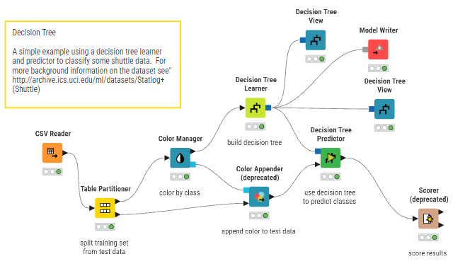
CSV Reader#
Node ini digunakan untuk mengimpor dataset training_examples_play_tennis.csv ke dalam KNIME.
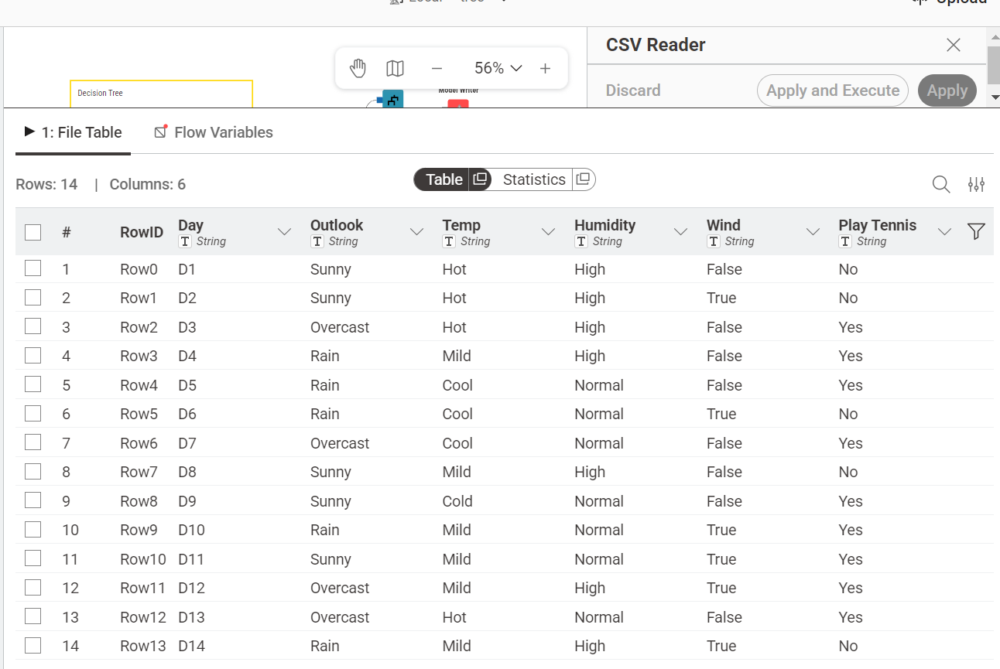
Partitioning#
Node ini digunakan untuk membagi dataset menjadi:
Data Training 90 % :
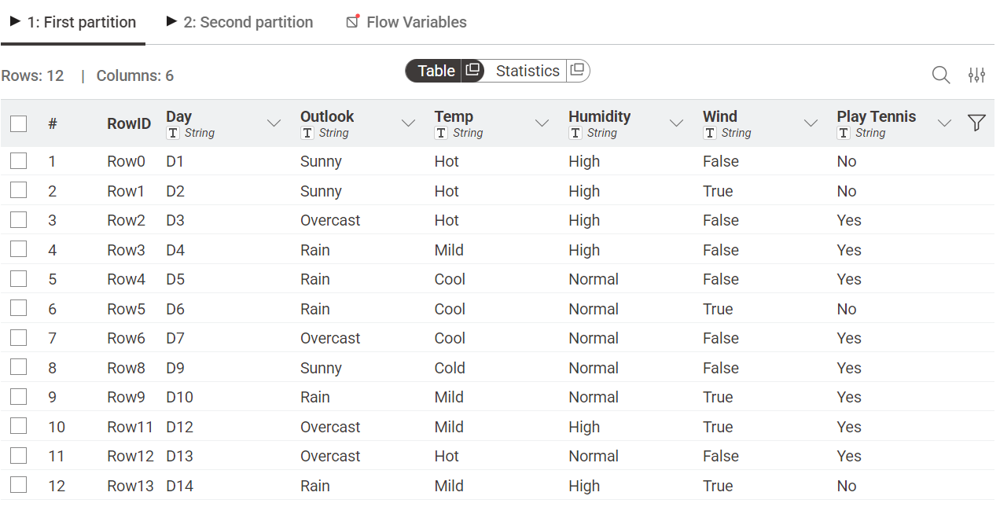
Data Testing 10 % :
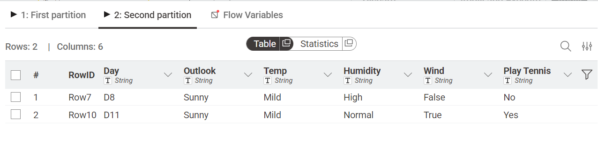
Tujuannya agar model dapat dilatih dan diuji secara terpisah.

Color Manager & Color Appender#
Node ini digunakan untuk memberikan warna pada kelas target (Yes / No) agar lebih mudah divisualisasikan.
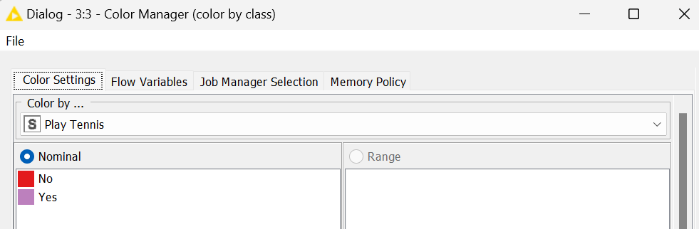
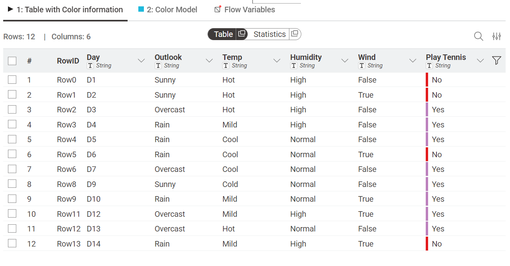
Decision Tree Learner#
Node utama untuk melatih model Decision Tree.
Proses yang dilakukan:
Menghitung Entropy
Menghitung Information Gain
Menentukan struktur pohon terbaik
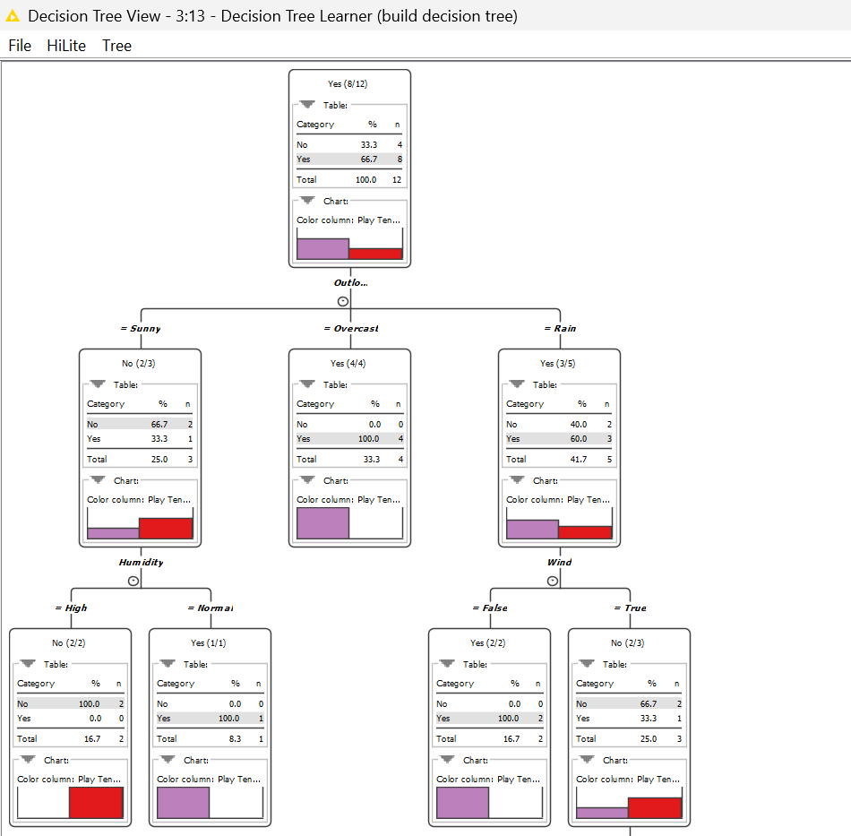
Decision Tree Predictor#
Node ini menerapkan model yang telah dilatih ke data testing untuk menghasilkan prediksi.
Output:
Yes / No berdasarkan kondisi cuaca
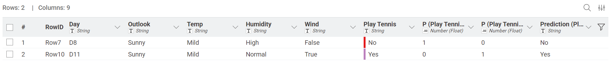
Scorer#
Node ini digunakan untuk mengevaluasi performa model.
Hasil evaluasi:
Confusion Matrix :
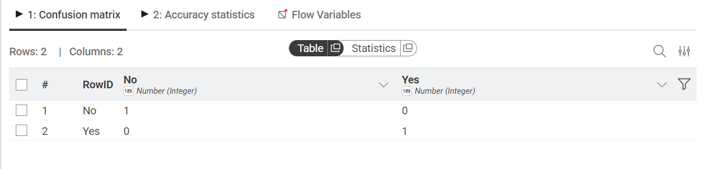
Accuracy Statistics :
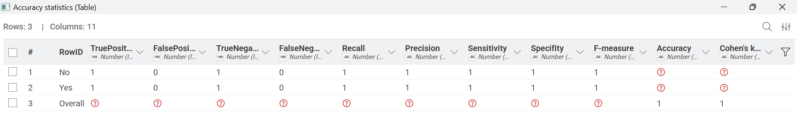
Decision Tree View#
Menampilkan hasil model dalam bentuk diagram pohon keputusan interaktif.
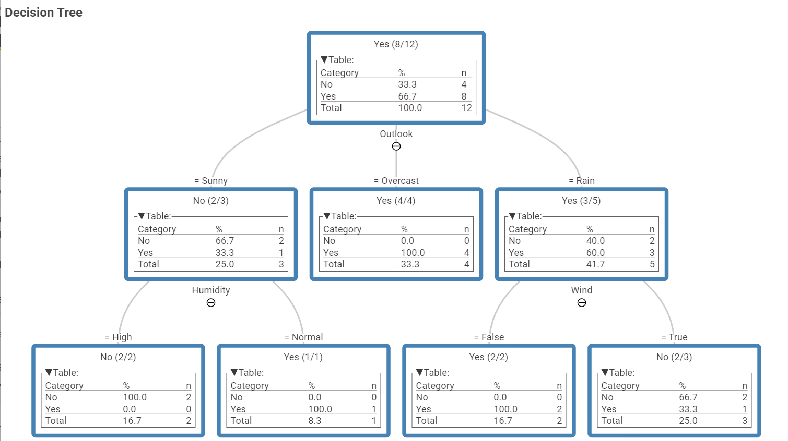
3. Analisis Logika Keputusan (Step-by-Step)#
Berdasarkan hasil Decision Tree Learner, model menghasilkan struktur keputusan berikut:
Perhitungan Entropy & Gain#
Entropy awal (14 data: 9 Yes, 5 No) = 0.940
Fitur dengan Information Gain tertinggi adalah:
Outlook (0.246) → menjadi root node
Struktur Percabangan#
Outlook = Overcast
Semua data → Yes
Entropy = 0 (pure node)
Outlook = Sunny Dilanjutkan dengan atribut Humidity :
High → No
Normal → Yes
Outlook = Rain Dilanjutkan dengan atribut Wind:
Strong → No
Weak → Yes
4. Kesimpulan#
Model Decision Tree menggunakan KNIME berhasil mengubah dataset cuaca menjadi aturan keputusan yang jelas dan mudah dipahami.
Model dapat memprediksi keputusan bermain tenis
Berdasarkan atribut cuaca: Outlook, Humidity, Wind
Hasil berupa struktur pohon yang mudah diinterpretasikan
Decision Tree sangat efektif untuk klasifikasi sederhana karena memberikan hasil yang transparan, logis, dan mudah dijelaskan.